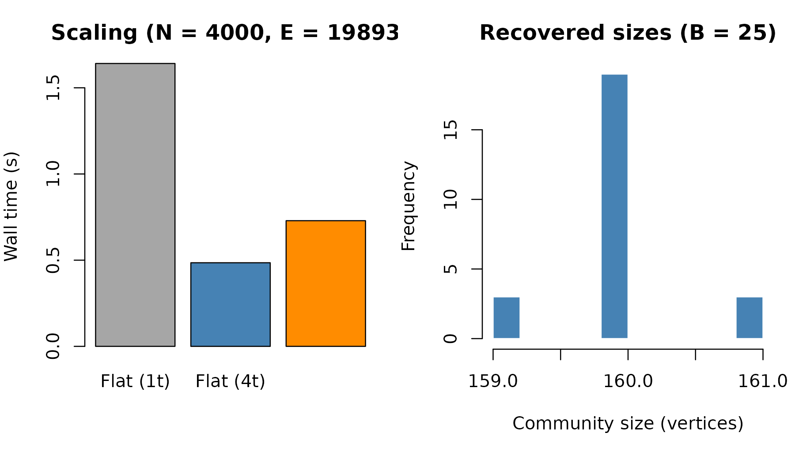

Large-Network Parallelism & Native C++ Extensions
Source:vignettes/scaling-and-cpp-extensions.Rmd
scaling-and-cpp-extensions.RmdThis article combines the large_networks and
cpp_extensions demos, covering multi-threaded SBM inference
on large graphs and writing custom C++ network algorithms directly
against rgraphtool’s public
<rgraphtool.h> header interface.
1. Scalable, multi-threaded SBM inference
For large graphs (\(N \ge 10^4\)),
rgraphtool provides a portable C++23
std::thread pool
(rgraphtool_set_num_threads()), strictly agglomerative
search (control = list(bisection = FALSE, r = 0.5)),
hierarchy-shape initialization (simple_init = TRUE), and
warm-starting (init_levels).
set.seed(42)
n <- 4000L
B_true <- 25L
k_avg <- 10
sz <- n %/% B_true
m_in <- as.integer(round(n * k_avg * 0.42))
m_out <- as.integer(round(n * k_avg * 0.08))
g_id <- sample.int(B_true, m_in, replace = TRUE)
u_in <- (g_id - 1L) * sz + sample.int(sz, m_in, replace = TRUE)
v_in <- (g_id - 1L) * sz + sample.int(sz, m_in, replace = TRUE)
keep <- u_in != v_in & u_in <= n & v_in <= n
u_out <- sample.int(n, m_out, replace = TRUE)
v_out <- sample.int(n, m_out, replace = TRUE)
keep2 <- u_out != v_out
edges <- rbind(cbind(u_in[keep], v_in[keep]), cbind(u_out[keep2], v_out[keep2]))
g_lg <- graph_add_edges(graph_create(n, directed = FALSE), edges)
truth <- rep(seq_len(B_true), each = sz)[seq_len(n)]
nthr <- min(4L, rgraphtool_max_threads())
invisible(block_description_length(block_state(g_lg)))
# Strictly agglomerative flat SBM: 1 thread vs multi-threaded
set.seed(1)
t_flat_1t <- system.time(
st_1t <- minimize_blockmodel_dl(g_lg, nthreads = 1L,
control = list(bisection = FALSE, r = 0.5))
)[3L]
set.seed(1)
t_flat_mt <- system.time(
st_mt <- minimize_blockmodel_dl(g_lg, nthreads = nthr,
control = list(bisection = FALSE, r = 0.5))
)[3L]
# Nested SBM with simple_init
set.seed(1)
t_nest_mt <- system.time(
nst_mt <- minimize_nested_blockmodel_dl(
g_lg, simple_init = TRUE, B_min_base = 100L,
nthreads = nthr, control = list(r = 0.5)
)
)[3L]
cat(sprintf(
"Flat (1 thr): %.3f s | Flat (%d thr): %.3f s (%.2fx) | overlap = %.4f\n",
t_flat_1t, nthr, t_flat_mt, t_flat_1t / max(t_flat_mt, 1e-6),
partition_overlap(block_membership(st_mt), truth, norm = TRUE)
))
#> Flat (1 thr): 1.641 s | Flat (4 thr): 0.485 s (3.38x) | overlap = 0.9992
cat(sprintf(
"Nested simple_init (%d thr): %.3f s | B0 = %d | overlap = %.4f\n",
nthr, t_nest_mt, max(nested_levels(nst_mt)[[1L]]),
partition_overlap(nested_levels(nst_mt)[[1L]], truth, norm = TRUE)
))
#> Nested simple_init (4 thr): 0.729 s | B0 = 26 | overlap = 0.9805
old_par <- graphics::par(mfrow = c(1L, 2L), mar = c(5, 4, 3, 1))
graphics::barplot(
c(t_flat_1t, t_flat_mt, t_nest_mt),
names.arg = c("Flat (1t)", sprintf("Flat (%dt)", nthr), sprintf("Nested (%dt)", nthr)),
ylab = "Wall time (s)",
col = c("grey65", "steelblue", "darkorange"),
main = sprintf("Scaling (N = %d, E = %d)", n, graph_num_edges(g_lg))
)
graphics::hist(
block_sizes(st_mt), breaks = 12, col = "steelblue", border = "white",
xlab = "Community size (vertices)",
main = sprintf("Recovered sizes (B = %d)", length(block_sizes(st_mt)))
)
graphics::par(old_par)2. Writing native C++ extensions with
<rgraphtool.h>
Downstream R packages (LinkingTo: rgraphtool, Rcpp, BH
and CXX_STD = CXX23) or interactive
Rcpp::sourceCpp() scripts can
#include <rgraphtool.h> to get zero-copy access to
rgraphtool::Graph, range-based iteration
(vertices_range, edges_range,
out_edges_range, all_neighbors_range), and
vertex/edge property maps with bounds-checked defaults and
upfront-validated raw-pointer views via
.get_unchecked().
rgraphtool ships with built-in reference implementations
(kcore_decomposition(), vertex_strength()) as
well as ready-to-compile standalone .cpp examples
discoverable via rgraphtool_extension_example().
set.seed(2026)
n_ext <- 1500L
u <- sample.int(n_ext, 7500L, replace = TRUE)
v <- sample.int(n_ext, 7500L, replace = TRUE)
kp <- u != v
g_ext <- graph_create(n_ext, directed = FALSE)
graph_add_edges(g_ext, cbind(u[kp], v[kp]),
properties = list(weight = stats::rexp(sum(kp), rate = 1.0)))
# Live-compile the bundled k-core and weighted-strength C++ extensions
ext_env <- new.env(parent = globalenv())
compile_cpp_extension(file = rgraphtool_extension_example("kcore"), env = ext_env)
compile_cpp_extension(file = rgraphtool_extension_example("weighted_degree"), env = ext_env)
kc_ext <- ext_env$ext_kcore_decomposition(g_ext, checked = FALSE)
stopifnot(identical(kc_ext, kcore_decomposition(g_ext, checked = FALSE)))
ws_ext <- ext_env$ext_weighted_strength(g_ext, "weight", checked = FALSE)
stopifnot(max(abs(ws_ext - vertex_strength(g_ext, "weight"))) < 1e-12)
# Benchmark checked vs. unchecked property map access (50 passes)
t_chk <- system.time(
for (i in seq_len(50L)) ext_env$ext_kcore_decomposition(g_ext, checked = TRUE)
)[3L]
t_uchk <- system.time(
for (i in seq_len(50L)) ext_env$ext_kcore_decomposition(g_ext, checked = FALSE)
)[3L]
cat(sprintf("50 x k-core (N=%d, E=%d): checked = %.4f s | unchecked = %.4f s\n",
n_ext, graph_num_edges(g_ext), t_chk, t_uchk))
#> 50 x k-core (N=1500, E=7497): checked = 0.0290 s | unchecked = 0.0100 sYou can also compile inline C++ code directly with
compile_cpp_extension(code = ...):
inline_cpp <- '
#include <rgraphtool.h>
// [[Rcpp::export]]
Rcpp::NumericVector ext_avg_incident_weight(SEXP graph, std::string prop = "weight") {
const rgraphtool::Graph& g = rgraphtool::get_graph(graph);
Rcpp::NumericVector out(static_cast<R_xlen_t>(rgraphtool::num_vertices(g)), 0.0);
auto out_u = rgraphtool::vertex_property_view(out, g).get_unchecked();
auto w_u = rgraphtool::edge_property_view(g, prop).get_unchecked();
for (auto v : rgraphtool::vertices_range(g)) {
double sum_w = 0.0;
size_t cnt = 0;
for (const auto& e : rgraphtool::out_edges_range(v, g)) {
sum_w += w_u[e];
++cnt;
}
out_u[v] = (cnt > 0) ? (sum_w / static_cast<double>(cnt)) : 0.0;
}
return out;
}
'
compile_cpp_extension(code = inline_cpp, env = ext_env)
summary(ext_env$ext_avg_incident_weight(g_ext, "weight"))
#> Min. 1st Qu. Median Mean 3rd Qu. Max.
#> 0.2661 0.7577 0.9635 0.9982 1.1857 2.6405